方法学与信号处理补充实验
最小五项包 · 完整测试集
本报告区分两个问题：噪声结构如何改变评价结果，以及针对该结构训练是否带来收益。第一阶段新增推理覆盖全部指定矩阵、强度与频带；第二阶段复用既有预测和检查点，不重新训练。
主要观察 · 点估计
- Standard A 在 0 dB 时，E 相对逐导联 RMS 匹配独立噪声的 AUROC 差值：ResNet -1.913 pp，TCN -1.248 pp；保留采集结构的噪声在这一设置下更难。
- Precordial-only 的 0 dB 差值靠近零：ResNet -0.034 pp、TCN +0.036 pp；Limb-only 分别为 -2.663 pp、-1.921 pp。近零点估计不构成等效证明。
- 频带敏感性不同：0 dB 时，ResNet 在 5–15 / 15–40 Hz 的差值为 -3.524 / -0.271 pp；TCN 在 0.05–5 / 15–40 Hz 为 -2.758 / -0.950 pp。
这三条均为完整结果中的预设条件点估计；各训练种子 SD、条件患者 CI 及其余全部条件见下文，不转换为新增显著性结论。
范围与统计口径
本轮只执行已选定的五项：A 矩阵消融、两阶段五档 SNR 曲线、四频带敏感性、评价效应—训练效应二维图，以及清洁代价—joint-unseen 鲁棒收益 Pareto 图。不包含 B4、频率依赖协方差匹配、500 Hz、外部数据或新增增强训练。
- 新增第一阶段推理：ResNet 在 DGX Spark 上两路并发；TCN 在本地 RTX 4070 上单路执行。训练种子固定为 17、29、43；每个非清洁设置有六个固定噪声实现。
- 第二阶段使用原有两模型、四策略、五个训练种子；Gaussian 全电极曲线包含 20、15、10、5、0 dB。两阶段不合并种子，不进行概率集成。
- 先在每个检查点内按固定噪声实现取指标均值，再报告训练种子均值及样本 SD（ddof=1）。五个随机矩阵先在种子内平均，另保留逐矩阵结果。
- 患者区间使用与原第二阶段字节一致的 2,000 个共同患者聚类重采样；每次抽中患者时带入其全部 ECG。对同一 draw 先做配对差或比值，再跨训练种子平均。该 CI 条件于已完成的模型、噪声与矩阵，不是涵盖训练随机性的总不确定性。
- Macro F1 沿用每个检查点的原清洁验证阈值；ECE 是五类正类概率的 15 等宽 bin 校准误差再取宏平均，不是 top-label ECE。AUROC/F1 的 E−I 为正表示 E 测试值更高；ECE 的 E−I 为正表示校准更差。
- 所有补充比较均为描述性、探索性结果；不新增 p 值或显著性家族，不改变第二阶段原六个 Holm 检验。下文性能差值以百分点（pp）显示，CSV 保留原始 0–1 尺度。
评价结构效应：Δeval = M(E) − M(IRMS)；退化量：D = M(clean) − M(noisy)。
对 ECE，D 为正意味着校准误差下降，而不是性能退化；本文热图仅展示 AUROC 退化，避免混淆方向。
一 · A 矩阵消融
比较 Standard、Limb-only、Precordial-only，以及五个固定随机矩阵的家族均值。Limb/Precordial 操作掩蔽的是电极列，不是导联行；Limb-only 仍可通过 Wilson 中央端影响胸导联。每个具体矩阵都重新构建自己的逐记录、逐导联 RMS 匹配独立对照。
随机矩阵固定采用同能量行组内置换与非零连接符号翻转，保持 Standard 的行/列平方范数及非零个数；允许秩改变。这是受限、平衡的接线负对照，不能代表任意随机矩阵总体。掩蔽家族之间并不保证局部导联能量分布相同。
AAᵀ 是独立单位方差电极源在未做逐记录 SNR 标定时的结构参照；不把它等同于最终注入残差的经验协方差。实际输入相关性另行测量。
| 具体矩阵 | 秩 | 右零空间维数 | 左零空间维数 | 总平方增益 | AAᵀ 非对角绝对均值 |
|---|---|---|---|---|---|
| standard | 8 | 1 | 4 | 18.500 | 0.292 |
| limb_only | 3 | 6 | 9 | 12.500 | 0.292 |
| precordial_only | 6 | 3 | 6 | 6.000 | 0.000 |
| random_00 | 9 | 0 | 3 | 18.500 | 0.388 |
| random_01 | 9 | 0 | 3 | 18.500 | 0.411 |
| random_02 | 9 | 0 | 3 | 18.500 | 0.465 |
| random_03 | 9 | 0 | 3 | 18.500 | 0.459 |
| random_04 | 9 | 0 | 3 | 18.500 | 0.402 |
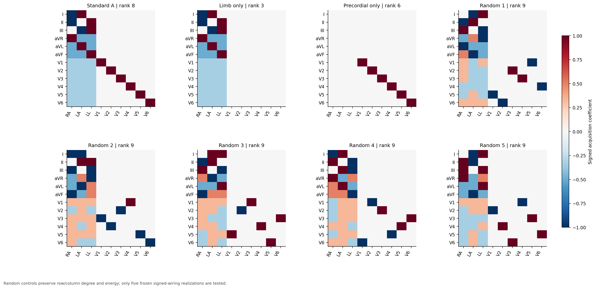
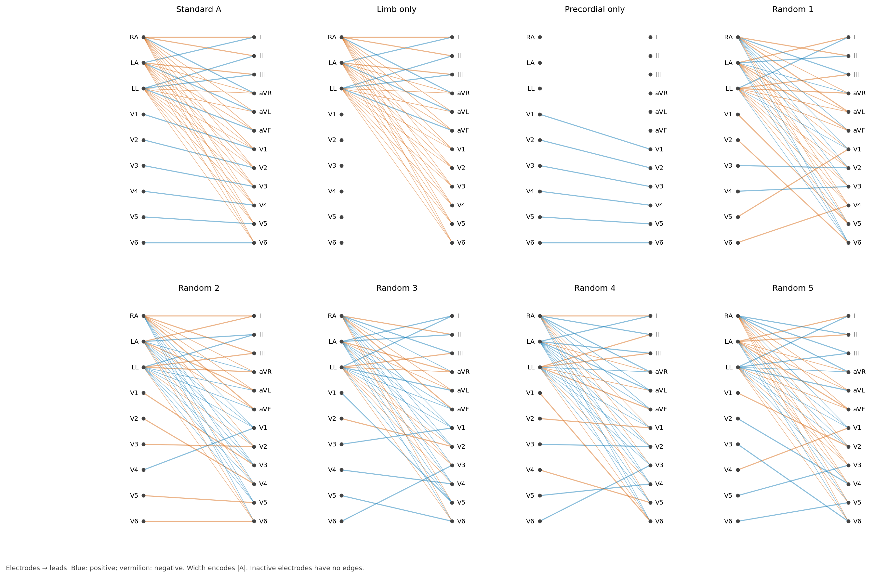
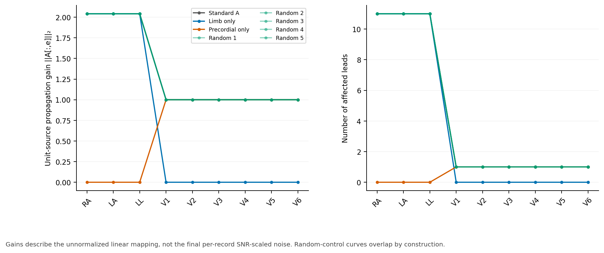
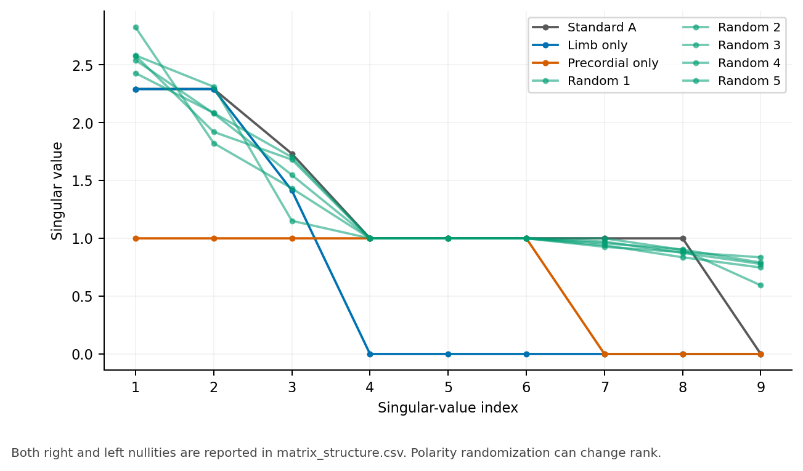
Standard 在 0 dB 的 AUROC 结构效应为：ResNet -1.913 pp，TCN -1.248 pp。其余家族与 10 dB 结果全部列出，不按效应方向筛选。
| 模型 | 矩阵家族 / 频带 | SNR / dB | E−I 均值 / pp | 训练种子 SD / pp | 条件患者 95% CI / pp |
|---|---|---|---|---|---|
| ResNet | Limb only | 0 | -2.663 | 0.441 | [-2.894, -2.428] |
| ResNet | Limb only | 10 | -0.355 | 0.155 | [-0.432, -0.280] |
| ResNet | Precordial only | 0 | -0.034 | 0.096 | [-0.181, +0.117] |
| ResNet | Precordial only | 10 | -0.008 | 0.014 | [-0.056, +0.043] |
| ResNet | Randomized mean | 0 | -0.406 | 0.377 | [-0.535, -0.275] |
| ResNet | Randomized mean | 10 | -0.058 | 0.030 | [-0.101, -0.015] |
| ResNet | Standard A | 0 | -1.913 | 0.284 | [-2.113, -1.702] |
| ResNet | Standard A | 10 | -0.241 | 0.125 | [-0.306, -0.174] |
| TCN | Limb only | 0 | -1.921 | 0.669 | [-2.154, -1.694] |
| TCN | Limb only | 10 | -0.111 | 0.074 | [-0.175, -0.047] |
| TCN | Precordial only | 0 | +0.036 | 0.020 | [-0.042, +0.113] |
| TCN | Precordial only | 10 | +0.020 | 0.021 | [-0.009, +0.051] |
| TCN | Randomized mean | 0 | -0.126 | 0.268 | [-0.212, -0.048] |
| TCN | Randomized mean | 10 | +0.017 | 0.028 | [-0.013, +0.047] |
| TCN | Standard A | 0 | -1.248 | 0.417 | [-1.419, -1.080] |
| TCN | Standard A | 10 | -0.061 | 0.042 | [-0.115, -0.008] |
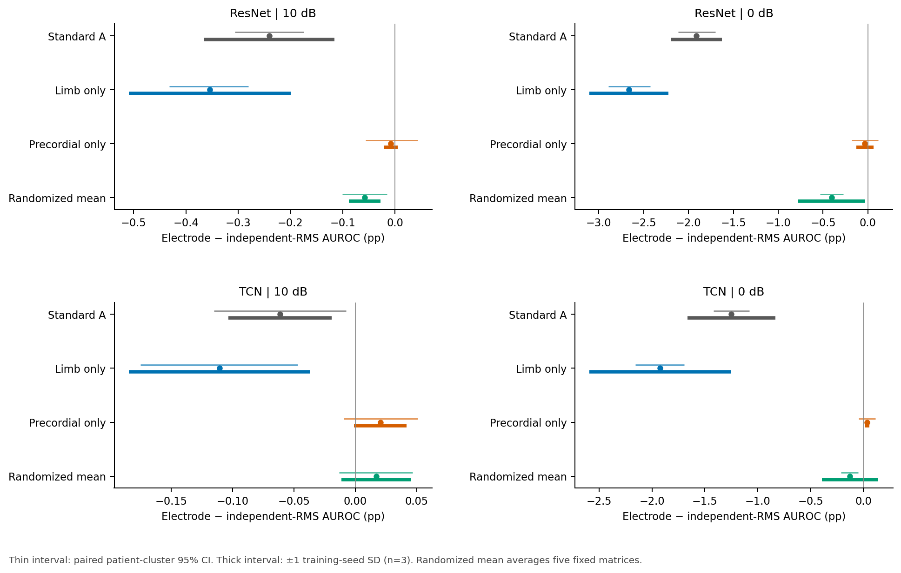
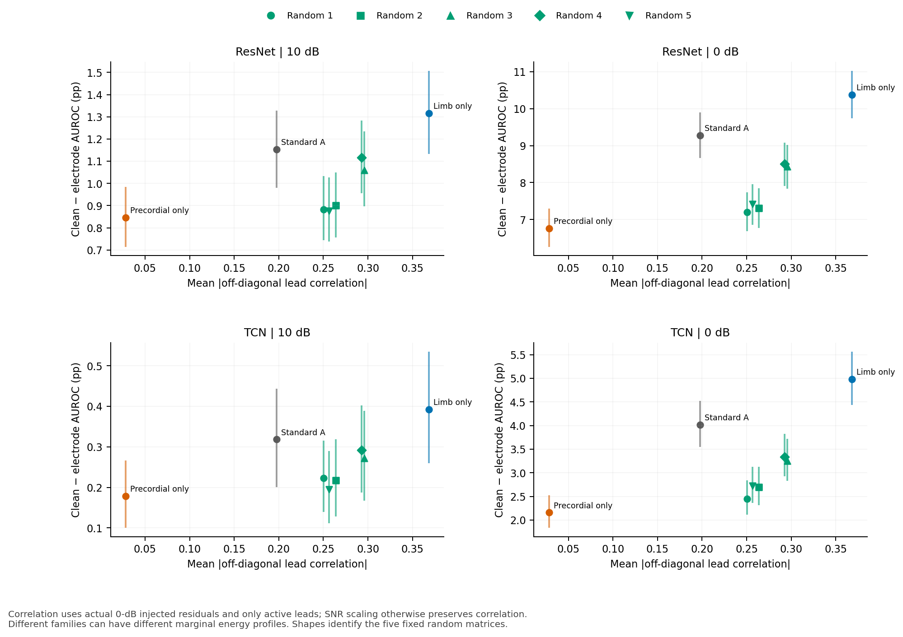
相关性散点的横轴是 0 dB 最终注入残差在活跃导联上的平均绝对非对角 Pearson 相关；不能把拓扑、秩、局部能量分配与频谱影响都解释成一个相关系数。
二 · 两阶段 SNR×结构曲线
第一阶段以相同既有检查点、同一平台执行全部五档，包含补齐的 15 和 5 dB；旧有 20/10/0 dB 及 clean 共 222 个条件—检查点单元用于数值桥接。第二阶段使用原 Gaussian 全电极设置的五档结果，四种训练策略分开绘制。连线只连接固定条件，不拟合或预设连续、单调的剂量反应。
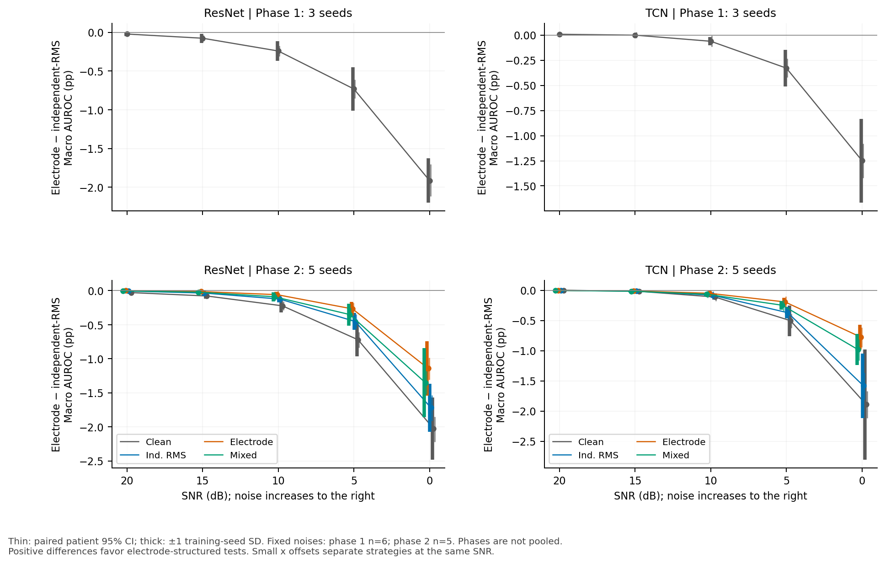
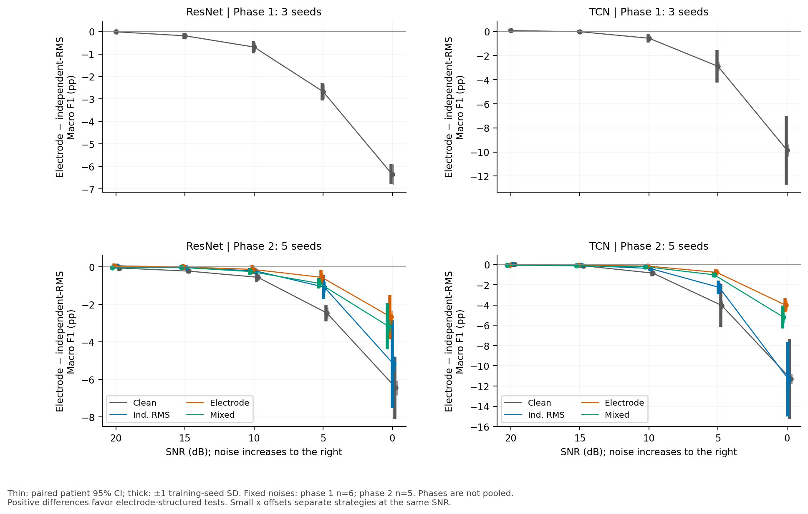
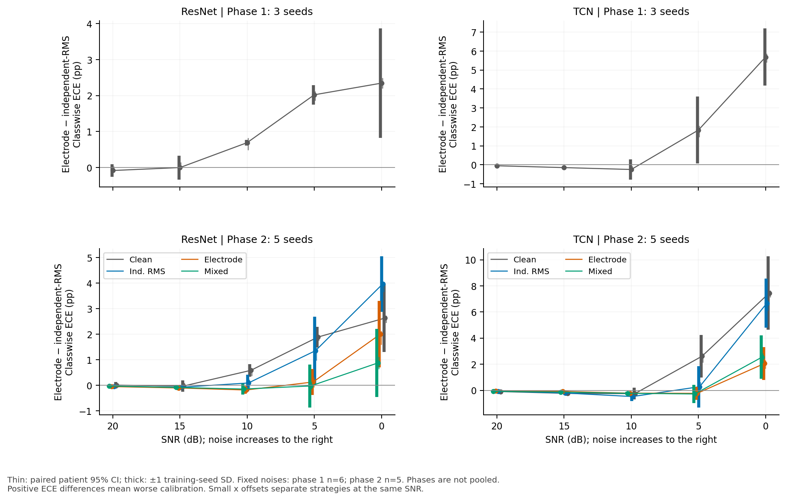
第一阶段 AUROC：全部五档数值
| 模型 | SNR / dB | E−I 均值 / pp | 训练种子 SD / pp | 条件患者 95% CI / pp |
|---|---|---|---|---|
| ResNet | 0 | -1.913 | 0.284 | [-2.113, -1.702] |
| ResNet | 5 | -0.731 | 0.280 | [-0.849, -0.610] |
| ResNet | 10 | -0.241 | 0.125 | [-0.306, -0.174] |
| ResNet | 15 | -0.076 | 0.059 | [-0.113, -0.038] |
| ResNet | 20 | -0.022 | 0.026 | [-0.044, +0.001] |
| TCN | 0 | -1.248 | 0.417 | [-1.419, -1.080] |
| TCN | 5 | -0.328 | 0.181 | [-0.420, -0.235] |
| TCN | 10 | -0.061 | 0.042 | [-0.115, -0.008] |
| TCN | 15 | -0.001 | 0.005 | [-0.030, +0.031] |
| TCN | 20 | +0.008 | 0.003 | [-0.009, +0.025] |
第二阶段 AUROC：四策略与全部五档数值
| 模型 | 训练策略 | SNR / dB | E−I 均值 / pp | 训练种子 SD / pp | 条件患者 95% CI / pp |
|---|---|---|---|---|---|
| ResNet | Clean | 20 | -0.028 | 0.015 | [-0.049, -0.007] |
| ResNet | Clean | 15 | -0.078 | 0.039 | [-0.114, -0.041] |
| ResNet | Clean | 10 | -0.222 | 0.098 | [-0.286, -0.158] |
| ResNet | Clean | 5 | -0.720 | 0.247 | [-0.838, -0.606] |
| ResNet | Clean | 0 | -2.026 | 0.454 | [-2.224, -1.848] |
| ResNet | Ind. RMS | 20 | -0.006 | 0.012 | [-0.025, +0.013] |
| ResNet | Ind. RMS | 15 | -0.035 | 0.021 | [-0.069, -0.002] |
| ResNet | Ind. RMS | 10 | -0.123 | 0.049 | [-0.181, -0.065] |
| ResNet | Ind. RMS | 5 | -0.453 | 0.125 | [-0.556, -0.348] |
| ResNet | Ind. RMS | 0 | -1.719 | 0.352 | [-1.908, -1.534] |
| ResNet | Electrode | 20 | +0.001 | 0.024 | [-0.020, +0.020] |
| ResNet | Electrode | 15 | -0.013 | 0.029 | [-0.047, +0.019] |
| ResNet | Electrode | 10 | -0.058 | 0.044 | [-0.113, -0.002] |
| ResNet | Electrode | 5 | -0.268 | 0.104 | [-0.362, -0.175] |
| ResNet | Electrode | 0 | -1.142 | 0.397 | [-1.307, -0.982] |
| ResNet | Mixed | 20 | -0.004 | 0.013 | [-0.024, +0.019] |
| ResNet | Mixed | 15 | -0.022 | 0.021 | [-0.056, +0.014] |
| ResNet | Mixed | 10 | -0.089 | 0.067 | [-0.145, -0.032] |
| ResNet | Mixed | 5 | -0.350 | 0.161 | [-0.448, -0.252] |
| ResNet | Mixed | 0 | -1.351 | 0.507 | [-1.521, -1.177] |
| TCN | Clean | 20 | -0.002 | 0.010 | [-0.022, +0.018] |
| TCN | Clean | 15 | -0.017 | 0.013 | [-0.054, +0.019] |
| TCN | Clean | 10 | -0.111 | 0.045 | [-0.176, -0.047] |
| TCN | Clean | 5 | -0.503 | 0.254 | [-0.622, -0.391] |
| TCN | Clean | 0 | -1.890 | 0.913 | [-2.114, -1.673] |
| TCN | Ind. RMS | 20 | +0.001 | 0.010 | [-0.018, +0.019] |
| TCN | Ind. RMS | 15 | -0.013 | 0.019 | [-0.048, +0.021] |
| TCN | Ind. RMS | 10 | -0.080 | 0.033 | [-0.144, -0.018] |
| TCN | Ind. RMS | 5 | -0.371 | 0.095 | [-0.487, -0.258] |
| TCN | Ind. RMS | 0 | -1.581 | 0.536 | [-1.809, -1.363] |
| TCN | Electrode | 20 | -0.001 | 0.007 | [-0.018, +0.017] |
| TCN | Electrode | 15 | -0.011 | 0.015 | [-0.042, +0.021] |
| TCN | Electrode | 10 | -0.049 | 0.027 | [-0.103, +0.003] |
| TCN | Electrode | 5 | -0.193 | 0.068 | [-0.288, -0.104] |
| TCN | Electrode | 0 | -0.774 | 0.203 | [-0.942, -0.614] |
| TCN | Mixed | 20 | -0.003 | 0.008 | [-0.021, +0.015] |
| TCN | Mixed | 15 | -0.015 | 0.015 | [-0.047, +0.018] |
| TCN | Mixed | 10 | -0.065 | 0.027 | [-0.122, -0.011] |
| TCN | Mixed | 5 | -0.247 | 0.074 | [-0.346, -0.156] |
| TCN | Mixed | 0 | -0.981 | 0.259 | [-1.161, -0.817] |
两阶段使用不同的固定噪声集合及训练种子数。图中阶段差异不能替代同一第二阶段内的训练策略对照。
三 · 四频带敏感性
0.05–5、5–15、15–40、0.5–40 Hz 均由 100 秒高斯源生成，源 FFT 网格为 0.01 Hz，共用白噪声后分别带限，截取中央 10 秒、逐导联去均值，再完成逐记录全 12 导联 SNR 标定。新 0.5–40 Hz 长源参照与旧有 10 秒周期性分支严格区分。
0.05 Hz 的存在由长源频率网格验证，不能由 10 秒片段的 0.1 Hz FFT 网格直接分辨。截断、去均值和 float32 加法后的实际残差重新计算功率占比与 RMS/SNR；不以目标通带代替实际输入诊断。
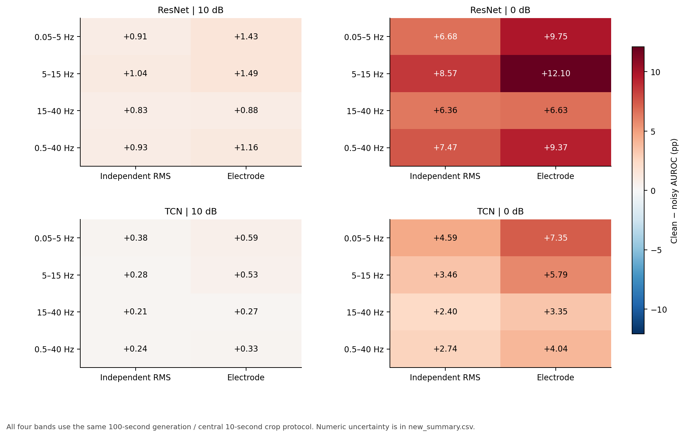
| 模型 | 矩阵家族 / 频带 | SNR / dB | E−I 均值 / pp | 训练种子 SD / pp | 条件患者 95% CI / pp |
|---|---|---|---|---|---|
| ResNet | 0.05–5 Hz | 0 | -3.068 | 0.854 | [-3.348, -2.797] |
| ResNet | 0.05–5 Hz | 10 | -0.526 | 0.115 | [-0.636, -0.421] |
| ResNet | 0.5–40 Hz | 0 | -1.898 | 0.558 | [-2.111, -1.702] |
| ResNet | 0.5–40 Hz | 10 | -0.227 | 0.109 | [-0.295, -0.160] |
| ResNet | 15–40 Hz | 0 | -0.271 | 0.529 | [-0.417, -0.114] |
| ResNet | 15–40 Hz | 10 | -0.053 | 0.068 | [-0.102, -0.002] |
| ResNet | 5–15 Hz | 0 | -3.524 | 0.959 | [-3.801, -3.269] |
| ResNet | 5–15 Hz | 10 | -0.449 | 0.052 | [-0.540, -0.363] |
| TCN | 0.05–5 Hz | 0 | -2.758 | 0.445 | [-3.042, -2.487] |
| TCN | 0.05–5 Hz | 10 | -0.210 | 0.051 | [-0.296, -0.120] |
| TCN | 0.5–40 Hz | 0 | -1.303 | 0.501 | [-1.486, -1.140] |
| TCN | 0.5–40 Hz | 10 | -0.091 | 0.061 | [-0.148, -0.037] |
| TCN | 15–40 Hz | 0 | -0.950 | 0.346 | [-1.102, -0.813] |
| TCN | 15–40 Hz | 10 | -0.058 | 0.037 | [-0.096, -0.023] |
| TCN | 5–15 Hz | 0 | -2.329 | 0.801 | [-2.556, -2.107] |
| TCN | 5–15 Hz | 10 | -0.251 | 0.110 | [-0.329, -0.175] |
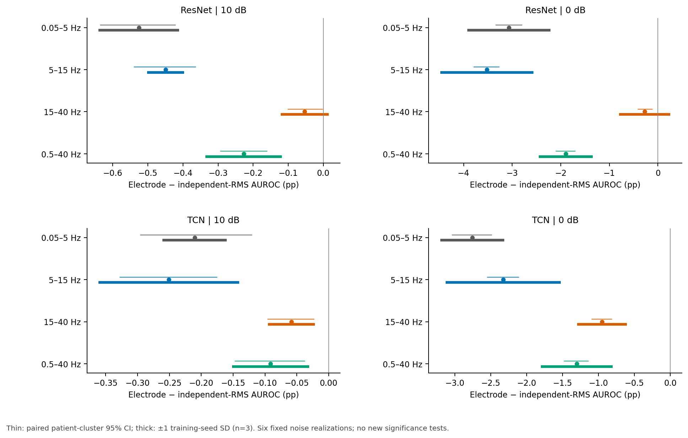
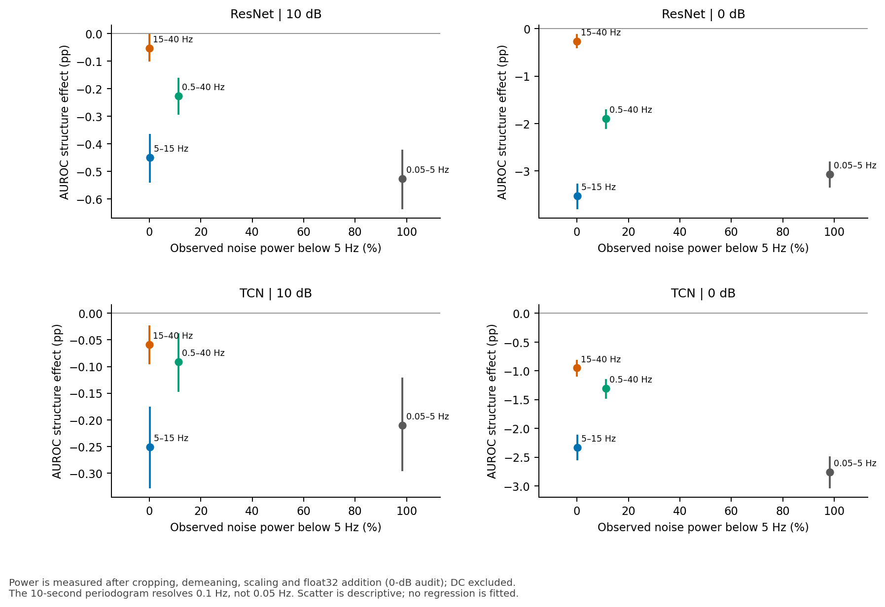
最终注入残差的频谱与去均值审计
以下为 ECG×固定噪声实现等权的输入诊断均值，不是统计 CI。功率百分比排除 DC；区间为 [0,5)、[5,15)、[15,40)、[40,50] Hz。去均值保留比例在 SNR 重新标定之前计算。
| 目标频带 | 结构 | <5 Hz / % | 5–15 Hz / % | 15–40 Hz / % | 40–50 Hz / % | 去均值保留功率 / % |
|---|---|---|---|---|---|---|
| 0.05–5 Hz | E | 98.36 | 1.57 | 0.06 | 0.01 | 99.73 |
| 0.05–5 Hz | I | 98.36 | 1.58 | 0.06 | 0.01 | 99.73 |
| 5–15 Hz | E | 0.23 | 98.95 | 0.81 | 0.01 | 100.00 |
| 5–15 Hz | I | 0.23 | 98.94 | 0.82 | 0.01 | 100.00 |
| 15–40 Hz | E | 0.01 | 0.11 | 99.55 | 0.33 | 100.00 |
| 15–40 Hz | I | 0.01 | 0.11 | 99.55 | 0.33 | 100.00 |
| 0.5–40 Hz | E | 11.28 | 25.31 | 63.20 | 0.21 | 100.00 |
| 0.5–40 Hz | I | 11.27 | 25.30 | 63.22 | 0.21 | 100.00 |
四 · 评价效应与训练效应
x = M(C,E,c,s) − M(C,I,c,s)；y = M(strategy,E,c,s) − M(C,E,c,s)。
C 是第二阶段 clean-only 模型。横纵轴均使用相同第二阶段的五个配对训练种子，c、s 分别为电极组合与 SNR。主图保留全部 21 个 Gaussian 组合×五档 SNR×两模型×三增强策略，共 630 个点；不把第一阶段三种子结果与第二阶段五种子结果错配。
两轴共享 clean-only electrode 基线，统计上不独立。本图用于区分评价变化与训练收益，不拟合因果斜率，也不把“评价更难/更容易”等同于“增强更好/更差”。
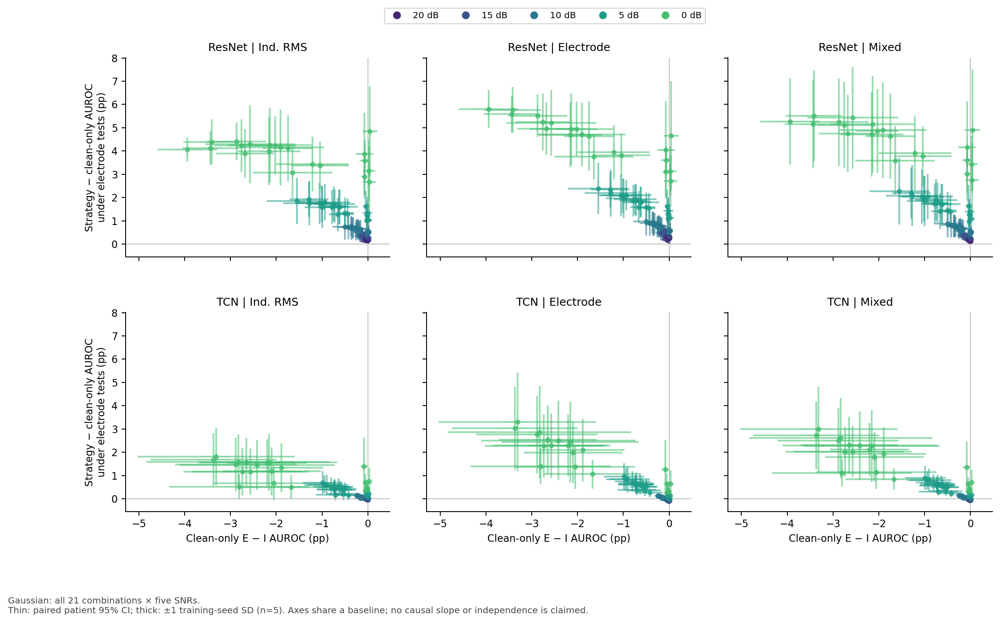
全电极、10/0 dB 锚点数值；完整 630 个 Gaussian 点见 CSV
| 模型 | 训练策略 | SNR | x 均值 / pp | x 种子 SD | x 患者 95% CI | y 均值 / pp | y 种子 SD | y 患者 95% CI |
|---|---|---|---|---|---|---|---|---|
| ResNet | Ind. RMS | 10 | -0.222 | 0.098 | [-0.286, -0.158] | +0.661 | 0.434 | [+0.508, +0.824] |
| ResNet | Ind. RMS | 0 | -2.026 | 0.454 | [-2.224, -1.848] | +4.235 | 1.258 | [+3.919, +4.575] |
| ResNet | Electrode | 10 | -0.222 | 0.098 | [-0.286, -0.158] | +0.787 | 0.454 | [+0.603, +0.985] |
| ResNet | Electrode | 0 | -2.026 | 0.454 | [-2.224, -1.848] | +4.932 | 1.182 | [+4.530, +5.355] |
| ResNet | Mixed | 10 | -0.222 | 0.098 | [-0.286, -0.158] | +0.694 | 0.402 | [+0.513, +0.891] |
| ResNet | Mixed | 0 | -2.026 | 0.454 | [-2.224, -1.848] | +4.859 | 1.791 | [+4.475, +5.275] |
| TCN | Ind. RMS | 10 | -0.111 | 0.045 | [-0.176, -0.047] | +0.072 | 0.071 | [-0.005, +0.147] |
| TCN | Ind. RMS | 0 | -1.890 | 0.913 | [-2.114, -1.673] | +1.340 | 1.047 | [+1.193, +1.485] |
| TCN | Electrode | 10 | -0.111 | 0.045 | [-0.176, -0.047] | +0.036 | 0.067 | [-0.053, +0.124] |
| TCN | Electrode | 0 | -1.890 | 0.913 | [-2.114, -1.673] | +2.091 | 1.341 | [+1.835, +2.351] |
| TCN | Mixed | 10 | -0.111 | 0.045 | [-0.176, -0.047] | +0.056 | 0.060 | [-0.023, +0.134] |
| TCN | Mixed | 0 | -1.890 | 0.913 | [-2.114, -1.673] | +1.929 | 1.134 | [+1.692, +2.169] |
NSTDB 的 bw、ma、em 另外形成 54 个点，单独展示为回放敏感性分析；波形形态、时序统计和跨导联结构共同变化，不能当成纯结构隔离证据。
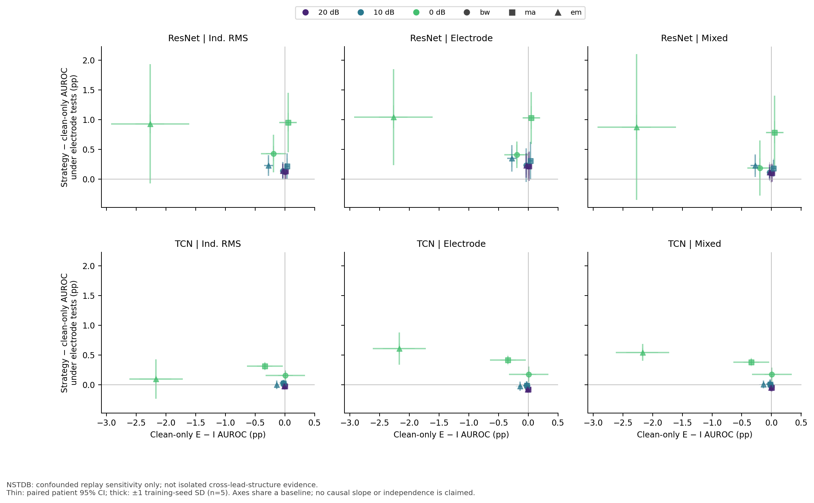
五 · 清洁代价与 joint-unseen 鲁棒收益
x = AUROC(C,clean) − AUROC(strategy,clean)；y = R(strategy) − R(C)，R = AUROC(joint-unseen) / (AUROC(clean) + 10−12)。
joint-unseen 沿用原主要终点：10 个 held-out 电极组合×15/5 dB×五个噪声实现、electrode 条件。比值先在各检查点及各患者 draw 内构成。横轴越小、纵轴越大越好，即左上方向，不是右上。
Electrode 训练相对 clean-only：ResNet 的清洁代价为 -0.217 pp，retention 收益为 +1.038 pp；TCN 分别为 +0.082 pp 和 +0.367 pp。负清洁代价表示清洁 AUROC 点估计提高。
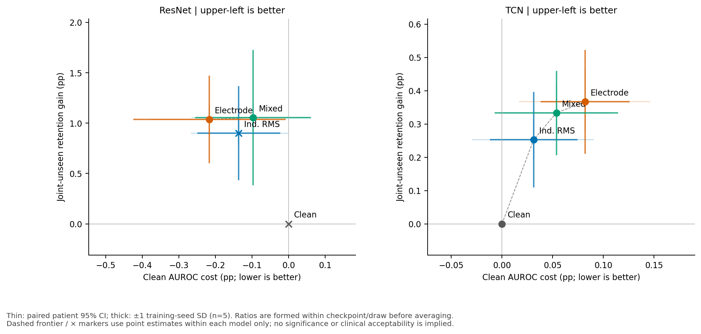
| 模型 | 策略 | 清洁代价 / pp | 种子 SD | 患者 95% CI | retention 收益 / pp | 种子 SD | 患者 95% CI | 清洁 AUROC | joint-unseen AUROC | 点估计被支配 |
|---|---|---|---|---|---|---|---|---|---|---|
| ResNet | Clean | +0.000 | 0.000 | [+0.000, +0.000] | +0.000 | 0.000 | [+0.000, +0.000] | 0.90715 | 0.88947 | 是 |
| ResNet | Ind. RMS | -0.136 | 0.113 | [-0.268, -0.000] | +0.900 | 0.468 | [+0.781, +1.021] | 0.90852 | 0.89899 | 是 |
| ResNet | Electrode | -0.217 | 0.208 | [-0.378, -0.057] | +1.038 | 0.435 | [+0.888, +1.192] | 0.90932 | 0.90103 | 否 |
| ResNet | Mixed | -0.097 | 0.158 | [-0.266, +0.053] | +1.055 | 0.671 | [+0.915, +1.194] | 0.90812 | 0.90000 | 否 |
| TCN | Clean | +0.000 | 0.000 | [+0.000, +0.000] | +0.000 | 0.000 | [+0.000, +0.000] | 0.91771 | 0.90988 | 否 |
| TCN | Ind. RMS | +0.031 | 0.043 | [-0.029, +0.091] | +0.253 | 0.144 | [+0.196, +0.312] | 0.91740 | 0.91189 | 否 |
| TCN | Electrode | +0.082 | 0.044 | [+0.017, +0.146] | +0.367 | 0.156 | [+0.279, +0.463] | 0.91689 | 0.91243 | 否 |
| TCN | Mixed | +0.054 | 0.061 | [-0.003, +0.107] | +0.333 | 0.127 | [+0.251, +0.421] | 0.91718 | 0.91241 | 否 |
虚线和支配标记仅按同一模型的点估计定义；不表示统计显著支配、临床非劣或临床可接受性。保留绝对 AUROC，避免只看归一化 retention 而忽略分母变化。
结论边界与投稿表述
- 本轮能支持的是固定线性采集映射、指定高斯带限噪声及既有模型下的结构敏感性证据；不是完整电极—皮肤界面、运动伪影或频率依赖阻抗模型的硬件验证。
- RMS 匹配控制每条记录每条导联的噪声能量；它不是逐记录频谱或频率依赖协方差的精确匹配。本轮未执行已排除的相关扩展。
- 训练种子 SD、固定噪声实现间差异、五个随机矩阵间差异和条件患者 CI 是不同变异来源，不能互相替代或直接相加。逐噪声、逐矩阵表保留这些层次。
- 同一患者、模型和噪声实现参与多个条件；630 个主图点不是 630 个独立样本。不得把视觉斜率、CI 跨零或点支配转换为新增显著性结论。
- 当前证据仅覆盖既有 100 Hz、同一官方测试划分和两类网络。未测试更高采样率、外部数据、其他电极图或新训练配比；不做这些范围之外的稳健性承诺。
建议把这五项作为对原结果的机制描述与稳健性边界补充，而不是扩张原主要检验家族。原第二阶段正式结论仍以其预注册终点和原六项 Holm 分析为准。
复现与验收
| 新增推理模型 | 分片 | 实际主机 | 实际 GPU | 保存预测单元 | PyTorch | NumPy |
|---|---|---|---|---|---|---|
| ResNet | 0 | spark-3082 | NVIDIA GB10 | 489 | 2.13.0+cu132 | 2.5.3 |
| ResNet | 1 | spark-3082 | NVIDIA GB10 | 486 | 2.13.0+cu132 | 2.5.3 |
| TCN | 0 | chiparon | NVIDIA GeForce RTX 4070 Laptop GPU | 975 | 2.5.1+cu121 | 2.2.6 |
DGX 两个实际 ResNet 进程的运行重叠为 76.331 秒。全部 1,950 份新增执行预测的条件、检查点、队列、原阈值及实际输入哈希均经合并检查。旧条件 222 单元的桥接全部通过；阈值标签最小一致率 100.0000%，最大概率绝对差 3.87e-07。
最终残差最大 SNR 绝对误差 2.31e-07 dB，最大逐导联 RMS 相对误差 1.47e-07；覆盖 310,752 条噪声诊断记录。另对六个确定位置×六个噪声种子×两结构共 72 个数组核对原生成器，0 dB 数组逐元素相同；这一抽样核对不冒充全数组逐元素基准对照。
独立重新聚合核对 930 行第一阶段摘要、120 行第二阶段曲线、684×2 个效应图轴及 8×2 个 Pareto 轴；第二阶段 AUROC 区间直接对照原共同患者 draw。41 个受保护基线/协议/结果文件 SHA-256 保持不变。100 记录烟测仅用于技术验收，不进入本报告的科学结果。
主复现命令与顺序
在现有项目根目录运行，沿用已完成的第一/二阶段数据、检查点、依赖和原始预测；阶段输入及源文件必须匹配冻结哈希。最初需先完整执行并验收 smoke，再进行 full；不能跳过该闸门。
Smoke 使用相同的 prepare→noise→deploy/predict→pull→merge→analyse_new→verify 链，把下列相应命令的 --stage full 改为 --stage smoke；跳过 analyse_existing、plot、report 和 publication 检查。只有生成通过状态的 smoke_verification.json 后才启动 full。
本轮本地解释器为 phase1_ecg_robustness/.venv/Scripts/python.exe；DGX 工作目录为 /home/chiparon/ecg_methodology_minimal_five，解释器为 /home/chiparon/ecg_benchmark/20260919_134009/venv/bin/python，SSH 别名为 dgx6。下列 python 指相应环境；远端从该工作目录执行，或将其设为 PYTHONPATH。两条 ResNet 命令需在独立进程同时启动。
python -m methodology_supplement.prepare --stage full python -m methodology_supplement.noise --stage full python -m methodology_supplement.analyse_existing --stage full python -m methodology_supplement.deploy --stage full --direction push # 本地 RTX 4070： python -m methodology_supplement.infer --stage full --model tcn --shard-index 0 --shard-count 1 # DGX Spark：同一工作目录、两个独立进程同时执行： python -m methodology_supplement.infer --stage full --model resnet --shard-index 0 --shard-count 2 python -m methodology_supplement.infer --stage full --model resnet --shard-index 1 --shard-count 2 # 两端全部完成后，在本地： python -m methodology_supplement.deploy --stage full --direction pull python -m methodology_supplement.merge --stage full python -m methodology_supplement.analyse_new --stage full python -m methodology_supplement.verify --stage full python -m methodology_supplement.plot --stage full python -m methodology_supplement.report python -m methodology_supplement.verify --stage full --publication
噪声生成、推理、统计和图表报告计算均设置 PYTHONDONTWRITEBYTECODE=1、OMP_NUM_THREADS=1、OPENBLAS_NUM_THREADS=1、MKL_NUM_THREADS=1；推理使用 CUBLAS_WORKSPACE_CONFIG=:4096:8、四个 PyTorch CPU 线程、FP32、batch 128，关闭 AMP/TF32。具体源指纹和软件版本见各 worker JSON，不能把不同软件栈说成位级相同环境。
完整表格与来源
- new_summary.csv
- new_seed_effects.csv
- new_noise_effects.csv
- random_matrix_effects.csv
- phase2_snr_summary.csv
- phase2_snr_seed_effects.csv
- effect_plane.csv
- effect_plane_seed_values.csv
- pareto.csv
- pareto_seed_values.csv
- matrix_structure.csv
- matrix_electrodes.csv
- matrix_leads.csv
- matrix_column_similarity.csv
- band_noise_audit.csv
- legacy_bridge.csv
冻结配置 · 数值验收 · 图形及来源哈希 · 源文件与基线冻结 · 全部矩阵及 Gram/列相似度